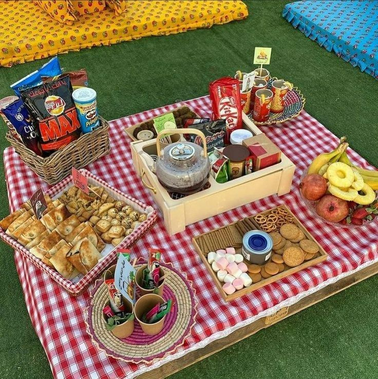

BLOGITE
~INSPIRATION~
Preparing for a Perfect Picnic: Tips and Essentials
May 7 2023 | By Femi Nyogal Yves

As the warm sun beckons us outdoors, there's no better way to enjoy the season than with a delightful picnic. Whether you're planning a romantic date, a family gathering, or a fun day out with friends, a well-prepared picnic can create lasting memories. In this blog, we'll explore some practical tips and essential items to help you plan a seamless and enjoyable picnic experience.
Choose the Ideal Location
Safety and convenience are essential companions in this journey.
Opt for a spot with accessible facilities, a place where your picnic can unfold with ease.
Ample shade, seating, and proper waste disposal facilities can transform a good location into an ideal one, ensuring your focus
remains on creating lasting memories.
Perhaps the most crucial consideration is the mood you seek.
Are you yearning for solitude, a quiet escape from the world's demands?
Seek out a tucked-away alcove where you can immerse yourself in nature's symphony.
If social engagement is your aim, a park bustling with activities might be the perfect backdrop for a shared feast and laughter.
Nature, being the true artist, paints its masterpiece with the changing seasons.
Spring may dress the landscape in blossoms, summer might blanket it in lush greenery, autumn adds warm hues, and winter bestows
a serene charm. The ideal location evolves with each season, inviting you to discover fresh facets of its beauty.
Whether you're a city dweller seeking a moment of respite or an adventurer chasing untouched horizons,
the perfect picnic location awaits. It's a canvas that welcomes your presence and transforms your outdoor soiree into an enchanting
tale. So, embark on this artistic endeavor, consider the elements that resonate with your soul, and choose the ideal location
that will craft the backdrop for your picnic's masterpiece.
Plan a Scrumptious Menu
Embrace the spirit of indulgence with sweet treats that evoke a sense of nostalgia and joy.
Delicate pastries, fruit tarts, and decadent chocolates add a touch of whimsy to your picnic tableau,
inviting you to linger and relish the simple pleasures of life.
Of course, no picnic is complete without the cool, refreshing companionship of beverages.
Think chilled lemonade, aromatic iced tea, or a crisp rosé wine that complements the flavors of your menu.
Each sip is a toast to the beauty of the outdoors and the company you keep.
When planning your picnic menu, consider the versatility of your choices and the ease of transport.
Opt for dishes that travel well and maintain their appeal even after a leisurely journey.
Whether you're seeking a romantic rendezvous or a lively gathering of friends, your menu sets the tone for the
occasion and ensures that your picnic becomes an unforgettable culinary adventure.
In the heart of nature's embrace, your scrumptious picnic menu becomes a masterpiece of flavors and memories.
It's a testament to the art of savoring, a celebration of community and the simple joys of a shared meal.
So, as you plan your next outdoor feast, let your imagination run wild, and create a menu that not only nourishes your
body but also feeds your soul.

Pack Smartly and Lightly
Embarking on a picnic is like embarking on an adventure, and packing smartly and lightly is the compass that guides your journey.
The art of preparing for a picnic is a delicate balance between bringing the essentials and embracing the freedom of unburdened leisure.
As you assemble your provisions, imagine each item as a brushstroke that contributes to the masterpiece of your outdoor experience.
Begin with the vessel that carries your picnic dreams: the basket.
Choose a sturdy yet charming basket that beckons with nostalgia and practicality.
Its woven embrace becomes a treasure chest, cradling your provisions with care.
Nourishment takes center stage in your picnic tableau.
Opt for reusable containers that keep your culinary creations fresh and intact.
Airtight containers guard against spills and maintain the integrity of your dishes, while insulated options ensure that chilled delights
stay refreshingly cool.
The blanket you select is more than just a surface; it's a canvas for comfort.
Pick a lightweight, water-resistant blanket that's easy to carry and unfold.
As it unfurls, it transforms into a cozy haven, inviting you to recline and immerse yourself in nature's embrace.
Consider Comfort and Entertainment
A picnic is more than just a meal; it's a sensory journey, a symphony of relaxation, and an opportunity to savor life's simple pleasures.
When planning your outdoor escapade, think beyond the culinary delights and consider the comfort and entertainment that will elevate
your experience to a new level of enchantment.
Comfort is the cornerstone of a memorable picnic.
As you prepare, envision plush cushions and soft blankets that transform your chosen spot into a haven of relaxation.
Padded seating cushions and supportive pillows add a touch of luxury, inviting you to recline in comfort and enjoy the feast before you.
Shade becomes your ally against the sun's embrace.
A stylish umbrella or a lightweight pop-up canopy offers respite from the sun's rays, allowing you to bask in the outdoors without worry.
Comfortable seating options, like portable chairs or even oversized floor cushions, ensure that you and your companions can linger in ease.
Entertainment weaves an enchanting thread into your picnic tapestry.
Consider bringing along a selection of engaging activities that enhance the camaraderie and connection.
A deck of cards sparks friendly competition, a frisbee invites playful energy, or a classic novel transports you to another world
as you lounge in the great outdoors.

Sun Protection and Bug Repellent for Picnics
As you venture into the great outdoors for a picnic, remember that nature's beauty comes with its own set of companions:
the sun's warm embrace and the occasional presence of buzzing interlopers. Ensuring your comfort and well-being,
sun protection and bug repellent become your trusty allies, allowing you to revel in the splendor of nature without hesitation.
Sun protection is your armor against the sun's potent rays.
Prioritize sunscreen with a broad spectrum SPF, shielding your skin from both UVA and UVB radiation.
A liberal application before and during your picnic forms an invisible shield, guarding against sunburn and long-term damage.
Your skin's health is a precious canvas, and sunscreen becomes the brush that paints it with protective care.
Don't forget to accessorize with style and functionality.
A wide-brimmed hat offers shade for your face and neck, while chic sunglasses not only complement your outfit but shield your
eyes from the sun's glare. A lightweight, long-sleeved cover-up provides an elegant layer of protection, allowing you to bask
in the sun's glow while keeping your skin shielded.
Bug repellent becomes your magical potion that wards off unwanted guests – those tiny, winged companions that can
disrupt your picnic serenity. Opt for a repellent with natural ingredients or one that contains DEET for effective protection.
A gentle application keeps bugs at bay, ensuring you can enjoy your meal without unwelcome distractions.
To create a bug-free zone, consider bringing along citronella candles or essential oil-based diffusers.
These aromatic additions not only add an ambiance of tranquility but also naturally deter insects from encroaching on your picnic paradise.
Sun protection and bug repellent are the unsung heroes of your outdoor feast,
allowing you to embrace the beauty of nature while safeguarding your well-being.
They're the silent sentinels that ensure your comfort remains paramount, enabling you to fully immerse yourself
in the sensory journey of your picnic. With every layer of sunscreen and every application of bug repellent, you're
crafting a shield of care that allows you to savor the flavors, sights, and sounds of your outdoor sanctuary.

Be Environmentally Conscious
As you venture into nature's embrace for a delightful picnic, let your footsteps leave behind not just memories,
but also a positive impact on the environment.
Embracing eco-conscious choices becomes your way of giving back to the very beauty that surrounds you, ensuring that your picnic
becomes a harmonious dance between enjoyment and environmental stewardship.
Begin by packing thoughtfully. Opt for reusable containers, water bottles, and utensils to minimize single-use waste.
Durable, eco-friendly picnic ware becomes your vessel for nourishment, allowing you to feast with a clear conscience.
These choices not only reduce plastic waste but also add a touch of elegance to your outdoor spread.
Embrace the art of repurposing. Cloth napkins, for instance, serve not only as an eco-friendly alternative to disposable
options but also add a dash of charm to your picnic setup.
Consider packing your picnic provisions in reusable tote bags, reducing the need for plastic or paper bags that harm the environment.
Take your eco-conscious ethos a step further by considering the origins of your picnic ingredients. Opt for locally sourced,
organic, and sustainable foods that support local farmers and reduce your carbon footprint.
By doing so, you're not only indulging your taste buds but also contributing to the preservation of biodiversity and the well-being
of the planet.
As you gather your picnic essentials, remember the golden rule: Leave no trace.
Designate a waste disposal plan that includes proper recycling and waste separation.
Pack a bag for collecting your trash and recyclables, ensuring that your picnic spot remains as pristine as when you found it.
Even the choice of location can reflect your commitment to the environment.
Opt for parks, beaches, or natural settings that encourage responsible enjoyment and offer proper waste disposal facilities.
Consider carpooling or using public transportation to reduce emissions and minimize your ecological impact.
Being environmentally conscious during your picnic is a tribute to nature's generosity and a commitment to its preservation.
Each eco-conscious choice is a brushstroke on the canvas of your outdoor experience,
a testament to your dedication to making a positive difference.
As you bask in the serenity of your picnic paradise, let your actions inspire others to follow suit, creating a ripple effect
of mindful picnicking that leaves a lasting legacy of harmony between nature and humanity.
With a little preparation and thoughtful consideration, a picnic can be a delightful escape from the routine of everyday life. From delectable bites to beautiful landscapes and quality time with loved ones, picnics offer a chance to savor life's simple pleasures. So, grab your picnic basket, round up your favorite people, and head outdoors for a memorable and enjoyable day filled with laughter, good food, and cherished moments. Happy picnicking!

Popular Posts

MARCH 1 2023
Shining Bright: Exploring the Hottest Trending Jewelry Pieces

JUNE 20 2023
Mastering the Art of Organization: Your Guide to a Clutter-Free Life

AUG 21 2023
Essential Items Every Woman Should Have in Her Bag